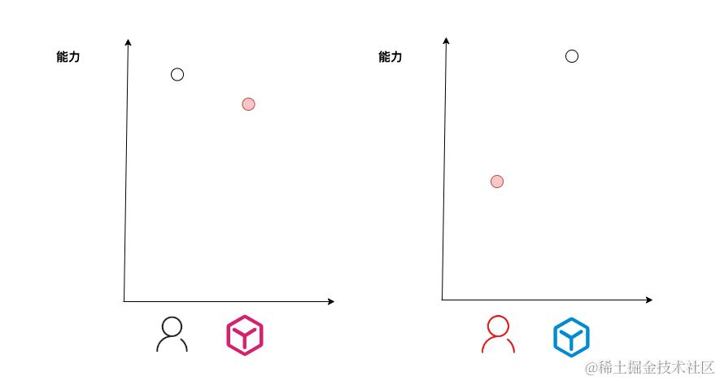

一、背景
在之前的学习中，我们已经掌握了多种提示词工程的策略与技巧，并积累了丰富的理论与实践经验。本节将重点探讨提示词工程中常见的误区，以帮助大家更全面地理解这一领域，从而创作出更高质量的提示词。同时，这也将为我们提供一个回顾前面章节中所讨论的提示词的相关认知的契机。
二、常见误区
误区1：提示词工程很简单，随便学学就行
许多人误以为提示词工程十分简单，认为稍微了解即可胜任。然而，知易行难。以写文章为例，表面上看，写作只需明确受众、确定主题、草拟大纲、添加配图、修改润色，并确保内容的连贯性和互动性。但实际上，不同作者创作的文章质量却有天壤之别。
提示词工程类似于一门提问的艺术，其核心在于如何明确且有效地向大语言模型传达任务要求。然而，说话很容易，但能用简洁的语言把复杂的事情讲清楚并非易事，许多人在工作多年后依然没有很好地掌握高效的沟通的技巧。
尽管提示词工程的基本技巧看似浅显，但在实际应用中，我们需要根据具体场景选择最恰当的表达方式，并运用有效的调优方法应对各种复杂情况。特别是在当前大模型能力尚未完全成熟的背景下，即便任务要求表达得再清晰，如果模型未能准确完成任务，往往还需要进一步引导。
例如，有些人在让大语言模型创作童话故事时，只提出了简单的需求，结果生成的内容十分空洞，远不如预期。精通提示词工程的人则会采用 CO-STAR 框架，详细说明故事的背景、目标、风格、语气、受众和相关细节，从而获得更符合要求的输出。许多人在提示词效果不佳时不知如何调优，便匆忙放弃；而有些人则能够针对不同场景从容编写提示词，并在遇到异常情况时迅速调优解决问题，这正是提示词工程的真正价值所在。
尽管网上有很多很好的提示词模板，然而实际使用时会有很多个性化的场景，这些模板很难满足我们个性化的需求。日常生活中需要我们能够在提示词模板使用时遇到 Bad Case 快速进行提示词调优；遇到无法满足的场景时，快速从容创建提示词满足需求。
误区2：提示词工程可以解决一切问题
提示词工程并非万能。 类比汽车驾驶，驾驶速度不仅取决于技术，还受到汽车性能和交通规则的限制。提示词效果的上限由模型能力和提示词编写者的水平等因素共同决定。

如果模型能力不足，即使提示词编写得再好，最终结果也难以令人满意。反之，如果模型能力强大，但提示词编写不到位，效果同样会大打折扣。此外，并非所有问题都能通过提示词工程解决。有些任务可能需要通过模型微调来实现更好的效果，而有些问题可能无论怎么优化提示词都无法得到理想的结果，此时就需要换用更高级的模型、调整解决问题的思路或对任务进行进一步拆解。
误区3：一套提示词适合所有场景和模型
一套提示词往往无法适应所有场景。 在业务应用中，根据不同场景使用不同的提示词至关重要。我们需要掌握提示词工程的技巧，灵活调整提示词以适应个性化需求。
此外，不同模型在指令理解和推理等能力上各有差异。一些在某个模型上效果良好的提示词，可能在另一个模型上表现不佳，有时候需要针对不同模型进行适当的调整。
误区4：提示词越复杂越好
所谓“大道至简”，复杂的提示词并不意味着效果更好。提示词的核心任务是明确传达需求，过于复杂的提示词可能反而让模型无法抓住重点，甚至导致误解。提示词过于复杂或冗长可能带来以下问题：
- 上下文混乱：当提示词过长时，模型可能难以保持上下文的清晰性，生成的内容容易偏离主题或语义，导致结果不准确或不相关。复杂的结构还可能让模型在理解提示词时出现偏差，产生与预期不符的结果。
- 信息冗余：过长的提示词可能包含过多冗余信息，使模型难以识别和提取最相关的部分，从而影响输出质量。由于大语言模型的注意力机制限制，模型可能会忽略提示词中的一些关键信息。
- 性能下降：过长的提示词会增加模型的计算量，可能导致响应速度变慢，特别是在资源受限的环境中，这种影响会更加明显。
此外，有些人偏爱使用特定的提示词框架，无论场景如何都使用相同的框架，反而可能适得其反。每种提示词框架都有其适用场景，需要根据实际情况选择最适合的提示词框架。
对于简单任务，简洁明了的提示词往往更有效；而对于复杂任务，使用结构化的提示词能帮助模型更清晰地理解和执行任务。
误区5：提示词的示例越多越好
提示词中的示例并非越多越好。 对于相对简单的任务，即使不提供示例，大语言模型也能很好地完成。这种情况下，无需添加额外示例。而在确实需要示例的场景下，数量也应适度。若示例不够精准或存在错误，反而可能影响模型的表现。对于相似的示例，提供一个即可，多个同质化示例并不会带来额外的效果提升，甚至可能起反作用。
提示词示例应遵循“从少到多”的原则。构建示例时，应注重正确性、代表性和多样性，而不是一味追求数量。
误区6：提示词中加要求模型就会听
不同模型的指令遵循能力不同。 通常来说，模型能力越强，其指令遵循能力越高。由于不同模型的指令理解能力有所差异，提示词中的要求并不总能得到完全执行。
为了提高模型对要求的响应效果，可以结合其他策略，如使用更高级的模型、在提示词中重复强调关键点，或在提示词中加入具体的示例等。
误区7：提示词设计好了就不需要改
提示词的编写并非一蹴而就。正如程序员编写代码后还需维护，若代码出现 BUG 或有新需求出现，则需对代码进行修改。人很难在一开始就能把问题都描述非常详细和清楚，也不太可能考虑到所有的异常情况。
提示词工程本质上是一个通过不断获取反馈、持续优化的过程。在实践中，灵活调整和不断改进提示词，才能更好地适应变化的需求和复杂的应用场景。
误区8：提示词一定要手动编写
如今，许多 AI 智能体平台已支持自动生成提示词功能，用户只需描述需求，平台即可自动编写提示词，网上也有丰富的提示词模板可供复制使用。因此，并非所有提示词都必须手动编写。
然而，这并不意味着提示词工程已变得无关紧要。只有清晰表达需求，模型才能生成高质量的提示词。此外，掌握提示词工程的技能仍然至关重要，因为它使我们能够调优自动生成的提示词，从而更好地满足实际需求。
自动化提示词编写虽然提高了效率，但我们仍需具备提示词调优的能力，以确保最终效果的精准性和适用性。
误区9：提示词自己测试效果不错，线上就应该很好
测试效果并不等同于线上表现。在对提示词进行评测时，所用的测试用例可能过于简单，测试用例的数量也可能偏少或缺乏代表性，而线上应用的用例通常更为多样且复杂，因此实际效果可能不如预期。
为了获得更客观的评测结果，测试时应构建更具代表性和多样化的用例，涵盖不同的复杂度。避免因过度乐观或悲观而影响判断。
误区10：提示词写好就行，用户输入不重要
提示词的质量固然重要，但用户输入的内容同样关键。就像医生诊断时，若病人描述的症状不准确，医生难以作出正确判断并对症下药。同样，若用户输入的信息存在歧义或不完整，即使提示词编写得再好，模型也难以得出理想的结果。
因此，需要重视对用户输入信息的准确性和完整性校验。高质量的提示词和高质量的用户输入相辅相成，才能确保模型的最佳表现。
三、总结
提示词工程是和大语言模型沟通的桥梁，是一门关于提问的艺术。尽管看似简单，但在实际应用中却充满挑战。
我们需要深入理解模型的能力和局限性，并根据不同的场景灵活调整提示词设计，以实现最佳效果。提示词工程的核心不在于复杂的框架或大量的示例，而在于如何精准传达任务需求，并通过持续优化提高模型表现。
避免常见误区，掌握提示词工程的核心技巧，能够帮助我们更好地利用大模型的潜力。同时，重视用户输入的质量以及不断调优提示词的能力，也是提示词工程成功的关键。提示词工程是一项需要不断实践和反思的工作，只有通过持续学习和调整，才能真正掌握其中的奥秘，最大化地发挥大模型的作用。
希望本文的分享能为你提供一些启发，助你在提示词工程的道路上走得更远。
COMMUNITY NOTES
读者评论
这篇文章暂时没有读者留言。